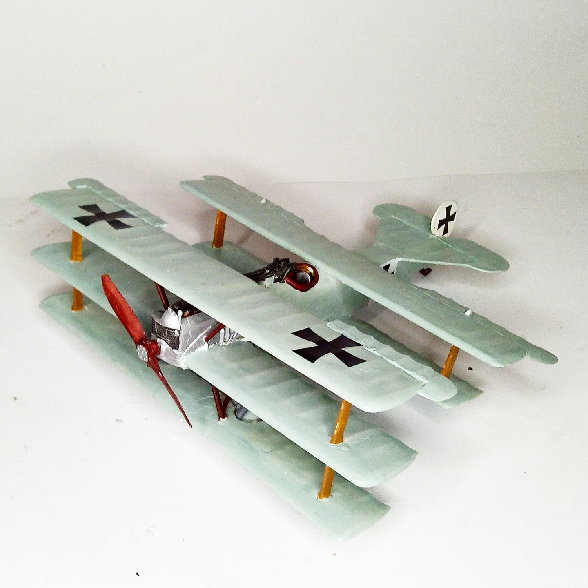

Aerei · scale model archive
Fokker V8
Fokker V8 — Kit: conversion, Scale: 1/48. If a triplane flies well, a quintuplane would fly even better, right? You wouldn´t believe but such a…

Photo gallery
English description
If a triplane flies well, a quintuplane would fly even better, right? You wouldn´t believe but such a concoction was actually built and flown, it made two brief flights in October 1917, obviously its flght characteristics were abysmal and the monstrosity was put to bed.
Descrizione italiana
If una triplane flies well, una quintuplane would fly even better, right? You wouldn't believe but such una concoction fu in effetti costruito e flown, lo made two brief flights in ottobre 1917, obviously its flght characteristics erano abysmal e il monstrosity fu put una bed.